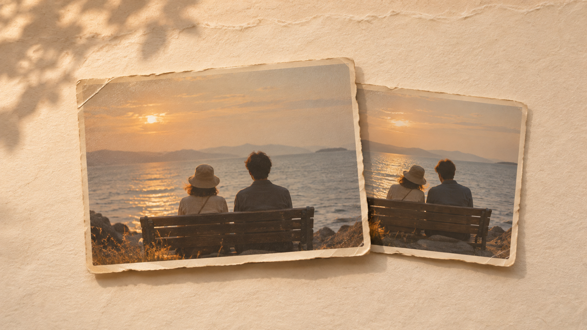

For editorial consideration
Look again before
you let go
Two similar photos can hold different details of the same moment.

In one photo, the evening light falls across the water. In the next, the person beside you has leaned a little closer. A quick flick through the library makes them look almost the same. Side by side, each holds something you might want to keep.
Meet the photo again
Mementide’s Memory Stream brings familiar images back into view. A photo you might otherwise swipe past can lead you back to a walk, a place, or someone you were with.
Look at the whole group
When several shots are close in time and look similar, Mementide groups them for comparison. Look at the light, framing, or a change in expression. You can keep one, keep several, or decide later.
Try a look and keep the original
Choose a look for a photo and press and hold to see the original again. If you prefer the result, save a separate copy. That way you can come back to either version.